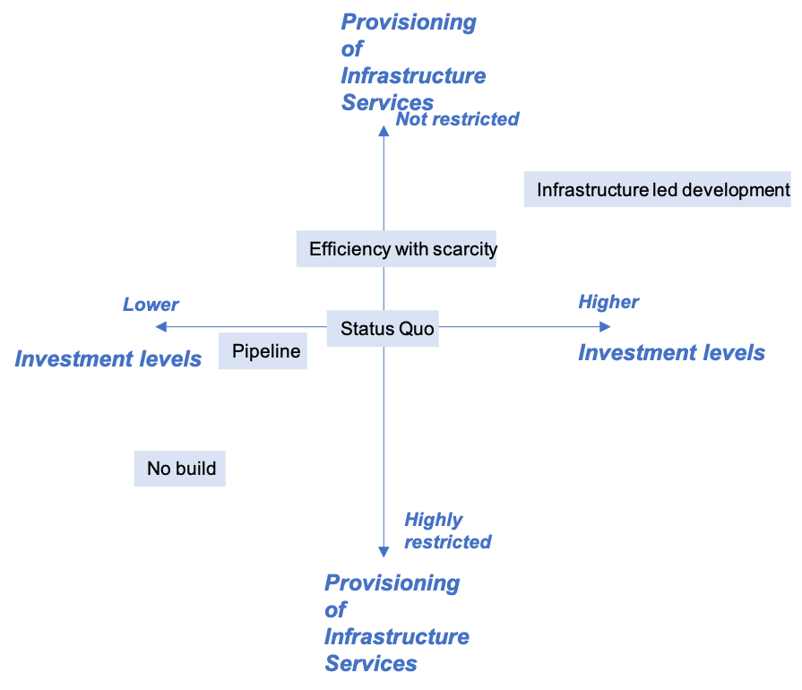
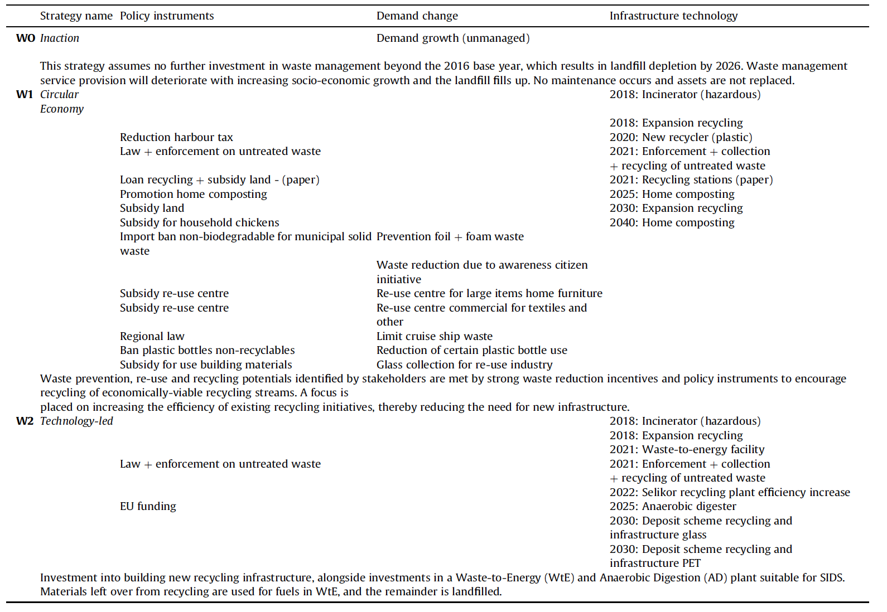
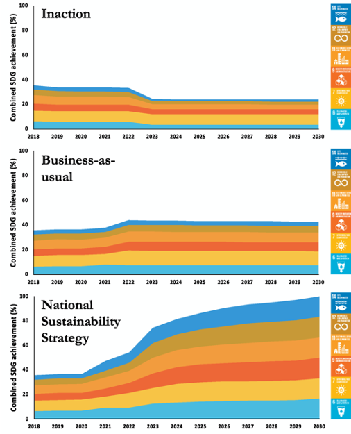
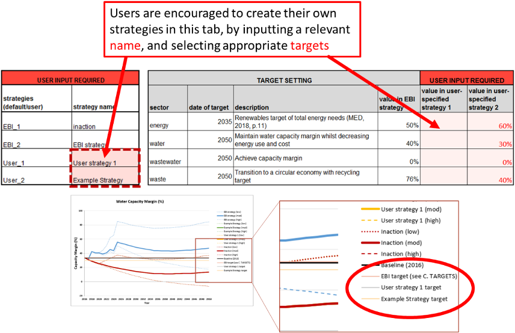
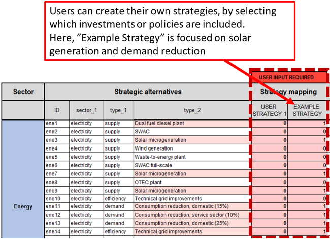

This mini-lecture introduces different case studies of sustainable infrastructure strategy development, the methods used to develop strategies in practice, and useful tools to transparently communicate and describe data quality and data sources.
This mini-lecture will introduce sector and cross-sectoral infrastructure strategies in practice within strategic infrastructure planning tools. It will provide examples of how infrastructure strategies have been developed in different contexts. Finally, the lecture will reflect on where to embed transparency into infrastructure strategy development in practice, and provide an outlook on infrastructure strategy development into the future.
The development of infrastructure strategies is embedded as a key step in strategic infrastructure planning tools that have been applied in various contexts (Ives et al. 2019; Fuldauer et al. 2019; Adshead et al. 2021).
A case study of infrastructure planning in Palestine has identified a broad set of infrastructure strategies in order to meet infrastructure service demands, as shown in Figure 6.4.1. These strategies differ with respect to the provision of infrastructure services and investment levels. Rather than aiming to produce an optimal strategy for Palestine, a range of strategies have been developed that allow the exploration of implications of alternative policies (Ives et al. 2019)

Figure 6.4.1: Infrastructure strategies in Palestine, developed with the aim of exploring implications of alternative policies. Author compilation, based on (Ives et al. 2019)
The various strategies include a no-built, pipeline, status quo, efficiency with scarcity, and infrastructure-led development strategy:
Focusing on the waste sector in Curaçao, different infrastructure strategies were developed through participatory methods, with the aim of testing different strategies considered feasible and desirable by local stakeholders (Fuldauer et al. 2019).
Strategy development was conducted using normative backcasting (see mini-lecture 6.2). Stakeholders were interviewed with the aim of determining an aspirational sustainable development vision for the waste sector by 2050. Stakeholders were tasked to consider feasible investments using five categories (legal, economic, land-use, infrastructure, information), as well as two different intervention points (demand reduction and capacity interventions).
The aim of the participatory backcasting process was to group different investments under contrasting visions for a sustainable waste sector. This can help diversify the portfolio of strategies for achieving the vision, ensuring that the analysis does not represent the perspective of an individual stakeholder, but rather the views of different stakeholders from multiple backgrounds (Fuldauer et al. 2019; Varho and Tapio 2005).
Two different visions of the future, i.e. strategies, emerged from the participatory backcasting exercise of the future of waste in Curaçao,, including a circular economy strategy as well as a technology-led strategy, which were compared to an inaction strategy for their performance on different indicators aligned with the Sustainable Development Goals (SDGs) (see Table 6.4.1)

Table 6.4.1: Different waste management strategies in Curaçao, (Fuldauer et al. 2019)
In a practical case study in Saint Lucia, various infrastructure strategies have been developed using hybrid methods of both participatory and content analysis (Adshead et al. 2021). Rather than organising strategies by broader categories of infrastructure system transformation (Otto et al. 2016), the aim of the infrastructure strategy development process here was to define an optimal implementation of investment and policies to achieve a given set of development-aligned targets.
The strategy development in Saint Lucia was conducted for a number of different sectors, including energy, solid waste, wastewater, and water, utilising sets of pre-defined interventions. These interventions were assembled through consultation with decision-makers in government ministries and agencies, as well as a review of numerous infrastructure studies and appraisals for Saint Lucia (Adshead et al. 2021).
The three strategies considered include an inaction strategy, a business-as usual strategy (incorporating short-term projects confirmed by the Government of Saint Lucia) and a ‘National sustainability strategy’ (constructed to achieve specific user-defined targets for infrastructure performance, which are aligned with specific targets of the SDGs and Saint Lucia’s targets for emission reductions as described in the island’s Nationally Determined Contributions (NDCs)).
Comparing these strategies allows for identification of their performance on certain indicators, such as on combined SDG performance (see Figure 6.4.2.)

Figure 6.4.2: Performance of strategies on 18 SDG targets directly linked to the provision of infrastructure (Adshead et al. 2021).
Transparently communicating data gaps and limitations of infrastructure strategies is critical to providing decision-makers with the means to (1) understand and visualise uncertainties, (2) update data with new sources, and (3) prioritise data collections.
Previous practical studies in Curaçao, and Saint Lucia on long-term infrastructure planning have generated tools that can be used by decision-makers to develop their own strategies and identify the performance of these strategies under various future socio-economic scenarios (Fuldauer et al. 2018; Adshead et al. 2021).
Allowing users to develop their own strategies can help understand their usefulness, and better communicate the advantages as well as drawbacks of different strategies. As described in detail in hands-on exercise 3, a National Infrastructure Systems Modelling tool (NISMOD) has been developed to explicitly include information on the level of confidence with respect to each data, as well as encoding the source of the data point (see Figure 6.4.3) (Fuldauer et al. 2018).
Figure 6.4.3: Confidence interval used in practical tools that embed strategy development in long-term infrastructure planning (Fuldauer et al. 2018).
These confidence intervals and links to data sources are included throughout the National Infrastructure Systems Modelling tool as described in hands-on exercise 3, which is exemplified in this example for Curaçao,. The tool allows users to first define strategies themselves, which can represent different visions of the future (see Figure 6.4.4).

Figure 6.4.4: Screenshot of National Infrastructure Systems Modelling tool where users can develop their own strategies (Fuldauer et al. 2018).
The National Infrastructure Systems Modelling tool then enables adding or deleting certain interventions or investments from a strategy, by inputting a 1 or 0. Each intervention has a specific level of confidence attached to it (Figure 6.4.5).

Figure 6.4.5: Screenshot of infrastructure planning tool where users can add different interventions or investments to an infrastructure strategy and embed its confidence (Fuldauer et al. 2018).
This mini-lecture has outlined practical examples of infrastructure strategies in different developing country contexts. Whilst infrastructure strategies in Palestine were used to explore different visions of the future without aiming to optimise a specific strategy, the development of infrastructure strategies in Saint Lucia were explicitly designed to optimise their performance on development and emission targets.
Participatory methods have proven useful in the small island context in Curaçao, and Saint Lucia, which, due to their small size, avoids limitations with respect to time and resource constraints as well as stakeholder selection – a fundamental issue in larger country contexts (Cairns et al. 2013). The strategy generation process can itself be an important step in implementing investments needed to achieve certain visions, as has been exemplified in the Curaçao, context (Fuldauer et al. 2019).
Future practical applications of strategy development in different countries could explore infrastructure strategies designed to meet certain climate adaptation, mitigation or other national targets.